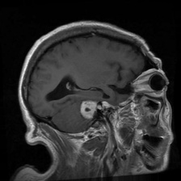
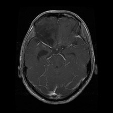
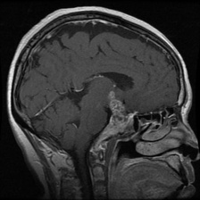
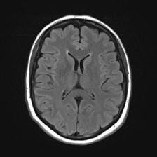

Loading AI Model (9.7 MB)…
🧠 Brain Tumor MRI Classifier
Deep learning diagnostic assistant powered by MobileNetV2. Upload an MRI brain scan and press Verify & Classify for immediate 4-class AI categorization.
📁 Upload MRI Scan
Drag & drop MRI scan here, or click to browse
Supports PNG, JPG, JPEG, BMP
Downloading model...
mri_scan.jpg
-- × -- px
⚡ Or Click a Sample to Test Instantly:

Meningioma
Glioma
Pituitary
No Tumor
🔬 Diagnostic Analysis
Awaiting MRI Scan
Upload an image on the left or select a sample scan, then click Verify & Classify.
⚪
DIAGNOSIS
Description text will appear here.
Confidence
--%
Diagnostic Certainty
Class Recall
--%
Sensitivity (True Pos)
Class F1-Score
--%
Harmonic Balance
Class Precision
--%
Positive Predictive
Class Probabilities
📊 Validation Metrics & Confusion Matrix
| Class | Recall | F1-Score | Precision | Test Scans |
|---|---|---|---|---|
| Glioma | 75.3% | 84.2% | 95.6% | 400 |
| Meningioma | 80.8% | 82.8% | 85.0% | 400 |
| No Tumor | 99.5% | 94.9% | 90.7% | 400 |
| Pituitary | 98.8% | 91.2% | 84.8% | 400 |
| Overall / Macro | 88.6% | 88.3% | 89.0% | 1,600 |
| True \ Pred | Glioma | Mening. | No Tum. | Pituit. |
|---|---|---|---|---|
| Glioma | 30175.3% | 5313.3% | 297.3% | 174.3% |
| Mening. | 133.3% | 32380.8% | 102.5% | 5413.5% |
| No Tumor | 10.3% | 10.3% | 39899.5% | 00.0% |
| Pituitary | 00.0% | 30.8% | 20.5% | 39598.8% |
⚡ MODEL PERFORMANCE
🔬 Independent Test Set (N = 1,600)
Status: Benchmark Verified
📊 Core Classification Metrics
Accuracy
88.6%
Macro Precision
89.0%
Macro Recall
88.6%
Macro F1 Score
88.3%
⚙️ Specifications
Validation Images
1,600
Classes
4
Architecture
MobileNetV2
Input Size
224 × 224
📈 Class-wise F1 Score
0%
25%
50%
75%
100%